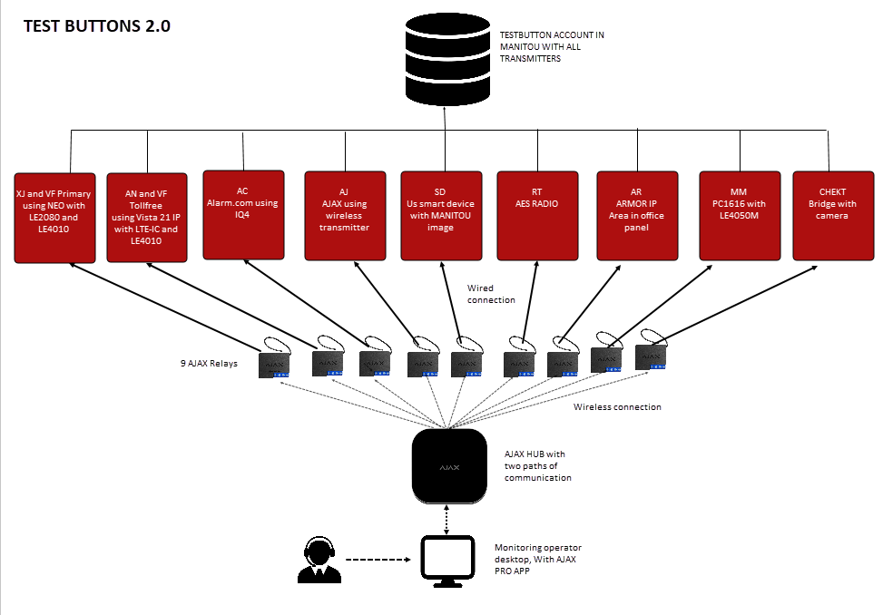
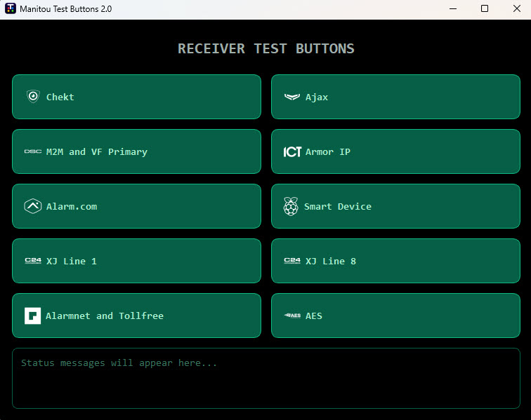
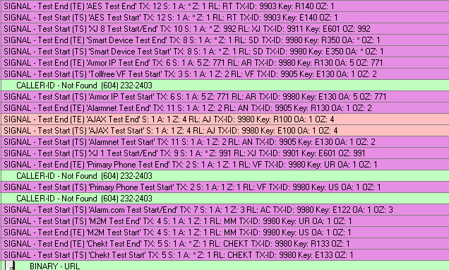

The Receiver Test Buttons Application is a Python-based tool developed to simplify the testing and verification of Manitou alarm receivers. The application uses API calls to Ajax dry-contact relays, allowing operators to generate test signals remotely and confirm that receivers are functioning correctly without needing to manually interact with security panels or customer accounts.
Setup
The solution is built around Ajax wireless relays connected to an Ajax Hub. Each relay is hardwired to a dedicated security panel that is configured to communicate with a specific Manitou receiver. When the application sends an API request to the Ajax Hub, the selected relay generates a pulse, which triggers the connected panel to transmit an alarm signal to the designated receiver.

How It Works
The system consists of nine Ajax wireless relays registered to a single Ajax Hub. Each relay is connected to a security panel, and each panel is programmed with the IP address and port information for a specific Manitou receiver. When an operator presses a button within the application, an API call is sent to the corresponding relay. The relay activates and triggers the panel, which then sends a test signal to the assigned receiver. Once the signal is received in Manitou, the operator can immediately verify that the receiver is operational and communicating correctly.

User Interface
The application features a simple and user-friendly interface built with PyQt. Each receiver is represented by a dedicated button, allowing operators to initiate a test with a single click. The design was intentionally kept straightforward to minimize training requirements and ensure that testing can be performed quickly and efficiently. Operators simply select the desired receiver, and the application handles the signal generation process automatically.

Manitou Integration
To support testing, a dedicated account was created within Manitou specifically for receiver verification. Custom alarm definitions were configured with clear descriptions such as "Test Start" and "Test End." These events provide immediate confirmation that the signal was successfully received and processed by the receiver, making it easy for operators to verify functionality during testing.
Project History
This project was developed for our monitoring station environment, which uses CSM Manitou as its primary alarm monitoring platform. Our infrastructure includes two on-premises Manitou servers as well as a cloud-hosted environment. As part of our operational procedures, monthly failover testing is performed between these systems to ensure continuity and reliability. Prior to this project, testing receivers required operators to locate accounts associated with specific receivers and manually generate test signals from those accounts. We also relied on legacy hardware test stations connected to in-house panels, many of which were over ten years old and becoming increasingly difficult to maintain. To modernize the testing process, the legacy hardware was replaced with Ajax wireless relays connected to various panel types used throughout the organization. The Receiver Test Buttons Application was then developed to provide a centralized and automated testing solution. As a result, operators can now perform receiver verification directly from their workstations without leaving their desks. In addition to supporting monthly failover procedures, the application is also used for daily receiver health checks to ensure that all receivers remain operational and ready to process alarm signals.